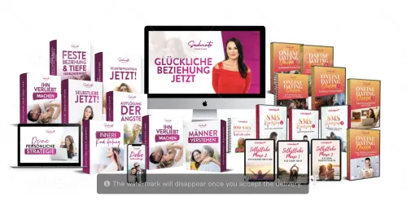
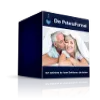
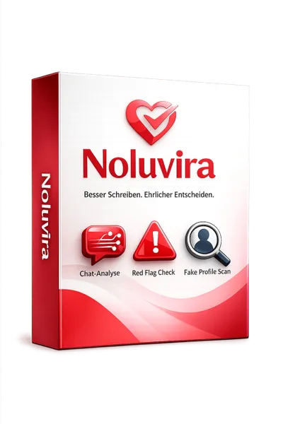

Trennung und Liebeskummer überwinden (Onlinekurs)
Produktprofil · Marktplatz-Daten 2026-10-09 · Verkaufsseiten-Recherche 2026-10-09 · Kategorien: Dating, Relationships & Romance, Personal Development
- Trennung und Liebeskummer überwinden (Onlinekurs) ist ein/e Mitgliederbereich & Videokurs in Dating, Relationships & Romance und Personal Development, vertrieben über den Digistore24-Marktplatz von Anbieter wielandstolzenburg, gelistet seit 2021-06-24.
- Listenpreis $270.72; Digistore24 meldet — Checkout-Konversion, — Stornierungsquote und 40 % Affiliate-Provision.
- Verdienst pro Verkauf (Affiliate): $108.29 (Anbieter-seitige Statistik, keine Prognose).
Interesse an Trennung und Liebeskummer überwinden (Onlinekurs)? Aktueller Preis, Boni und Garantiebedingungen finden Sie auf der offiziellen Seite des Anbieters:
Offizielle Verkaufsseite ansehen
Affiliate-Link (Werbung) — wir verdienen ggf. eine Provision, ohne Mehrkosten für Sie.
Marktplatz-Daten
| Produkttyp | Mitgliederbereich & Videokurs |
|---|---|
| Preis | $270.72 (Single payment, Installment) |
| Affiliate-Provision | 40 % |
| Garantie/Rückgabe | Laut Verkaufsseite des Anbieters — vor dem Kauf auf der offiziellen Seite prüfen |
| Anbieter | wielandstolzenburg (gelistet seit 2021-06-24) |
| Marktplatz-Statistiken* | Checkout-Konversion — · Stornoquote — · Verdienst/Verkauf $108.29 |
* Anbieter-seitige Statistiken von Digistore24; sie hängen von der Traffic-Qualität ab und sind keine Prognose.
Marktplatz-Beschreibung des Anbieters
Empfehle meinen hochwertigen Onlinekurs (99€-279€) und nutze diese Vorteile: Hohe Provision: Erhalte 40 % Provision Hohe Bekanntheit: Onlinekurs eines bekannten Beziehungspsychologen (ARD, ZDF, Focus, Stern …) Laufende Optimierung der Verkaufs-Funnel + geringe Stornoquote Hochconvertierende Werbemittel: Banner, E-Mail-Textvorlagen werden laufend optimiert ... (mehr auf meiner Affiliate-Supportseit…
Von der Verkaufsseite des Anbieters
Seitentitel: Trennung verarbeiten: Der Onlinekurs, um Liebeskummer zu überwinden
Meta-Beschreibung: Trennung verarbeiten: DER Onlinekurs eines Psychologen, um deine Trennung & Liebeskummer schneller zu überwinden
Hauptüberschrift
TRENNUNG ÜBERWINDEN
Abschnitts-Überschriften
- So hilft dir der Kurs dabei, deine Trennung Schritt für Schritt zu überwinden
- Einblick in den Kurs
- Erfahrungen von Menschen, die ihren Trennungsschmerz überwunden haben
- Über den Experten, Wieland Stolzenburg (Psychologe & Bestseller-Autor)
- Statt 279,00 Euro heute nur: 199 Euro
- Häufig gestellte Fragen (FAQ)
Einstiegstext
Wir nutzen Cookies auf unserer Website. Einige von ihnen sind essenziell, während andere uns helfen, diese Website zu verbessern.
Essentielle Cookies ermöglichen grundlegende Funktionen und sind für das ordnungsgemäße Funktionieren der Website erforderlich.
Vielleicht kennst du diese Gedanken: … du wachst morgens mit diesem flauen Gefühl im Magen auf und wünschst dir, dass es einfach aufhört? … du denkst ständig an deinen Ex und ein Teil von dir hofft immer noch, dass alles wieder gut wird? … du hast schon vieles ausprobiert, aber weißt trotzdem nicht, was dir wirklich hilft, aus dem Liebeskummer herauszukommen?
Mit diesem 10-Schritte-Onlinekurs lernst du, wie du deine Trennung verarbeitest. Du erfährst, was dir hilft, was dich zurückhält und welche Schritte dich wieder zu innerer Ruhe und Lebensfreude führen. Über 20 praktische Übungen helfen dir dabei, die Inhalte umzusetzen und deinen Veränderungsprozess aktiv zu unterstützen.
Fragen, die die Verkaufsseite beantwortet
- Du willst deine Trennung überwinden und den Trennungsschmerz hinter dir lassen?
- Wie funktioniert der Onlinekurs?
- Warum habe ich diesen Kurs erstellt?
- Wie erhalte ich Zugang zu den Videos nach dem Kauf?
- Wie läuft das mit der Bezahlung?
- Gibt es noch weitere Kosten?
- Gibt es eine Geld-Zurück-Garantie?
- Wie lange dauert es, den Kurs zu machen?
- Kann ich jedes Video sofort ansehen?
- Wie lange sind die Videos?
Recherche-Methode: rohes HTML · 2043 Wörter · Qualität: rich · recherchiert am 2026-10-09. Vollständige Recherche-Datei (MD) ↗
Anwendung — laut Anbieter
In diesem 10-Schritte-Videokurs lernst du, wie du mit deinen Gefühlen umgehst, deinen Ex-Partner loslässt und Schritt für Schritt wieder innere Ruhe und Lebensfreude findest.
Mit diesem 10-Schritte-Onlinekurs lernst du, wie du deine Trennung verarbeitest. Du erfährst, was dir hilft, was dich zurückhält und welche Schritte dich wieder zu innerer Ruhe und Lebensfreude führen. Über 20 praktische Übungen helfen dir dabei, die Inhalte umzusetzen und deinen Veränderungsprozess aktiv zu unterstützen.
Mit einer Schritt-für-Schritt-Anleitung, wie du deine Trennung überwinden und verarbeiten kannst. Mit allen wichtigen psychologischen Erkenntnissen, Übungen und Methoden aus meiner Praxis. Der Kurs ist nicht live, sodass du die Videos flexibel ansehen und beliebig oft wiederholen kannst.
Weitere Bilder (von der Verkaufsseite des Anbieters)
Bilder stammen von der offiziellen Verkaufsseite des Anbieters und zeigen das Produkt, wie es beworben wird.
Gut zu wissen
- Hoher Preis: $270.72 ist eine erhebliche Ausgabe — prüfen Sie, ob es einen Zahlungsplan gibt, und vergleichen Sie zuerst die günstigeren Alternativen der Kategorie.
- Keine Garantie-Formulierung in unserer Recherche gefunden — bestätigen Sie das Rückgabefenster auf der offiziellen Seite, bevor Sie kaufen.
- Hinweise der Verkaufsseite (wörtlich, nicht von uns geprüft): „Erhalte 4 Monate lange wöchentlich eine E-Mail mit den wichtigsten Gedanken, Impulse und Übungen - die dir helfen, langfristig alles richtig zu machen und wirklich frei und glücklich zu werden."
- Hinweise der Verkaufsseite (wörtlich, nicht von uns geprüft): „Du erfährst, was in den ersten Tagen und Wochen nach der Trennung wichtig ist, welche Fehler du vermeiden solltest und was dir hilft, wieder erste Stabilität zu gewinnen."
- Hinweise der Verkaufsseite (wörtlich, nicht von uns geprüft): „Jedes Video hat eine Länge von etwa 20 Minuten. Eine Fülle an wichtigen Informationen, die jedoch kompakt zusammengefasst sind."
Häufige Fragen zu Trennung und Liebeskummer überwinden (Onlinekurs)
Was ist Trennung und Liebeskummer überwinden (Onlinekurs)?
Trennung und Liebeskummer überwinden (Onlinekurs) ist ein Angebot des Typs „Mitgliederbereich & Videokurs" im Digistore24-Marktplatz, Anbieter: wielandstolzenburg, gelistet seit 2021-06-24. Eingepflegt unter Dating, Relationships & Romance und Personal Development. Digistore24 wickelt Checkout, Lieferung und Rückgaben ab.
Wie viel kostet Trennung und Liebeskummer überwinden (Onlinekurs)?
Der Digistore24-Marktplatz listet es für $270.72 (single payment, installment). Preise legt der Anbieter fest und können sich ändern — die offizielle Verkaufsseite zeigt den aktuellen Preis.
Gibt es eine Geld-zurück-Garantie für Trennung und Liebeskummer überwinden (Onlinekurs)?
Unsere Verkaufsseiten-Recherche hat keine explizite Garantie-Formulierung gefunden. Viele Digistore24-Produkte bieten 60 Tage Geld-zurück, aber das legt jeder Anbieter selbst fest — bestätigen Sie es auf der offiziellen Verkaufsseite, bevor Sie kaufen.
Ist Trennung und Liebeskummer überwinden (Onlinekurs) seriös?
Wir bewerten keine Seriosität — wir veröffentlichen überprüfbare Zahlen: Anbieter wielandstolzenburg (gelistet seit 2021-06-24), Checkout-Konversion —, Stornoquote —, Affiliate-Verdienst/Verkauf $108.29 (alles Anbieter-seitige Marktplatz-Statistiken). Lesen Sie unsere Recherche-Standards und entscheiden Sie anhand der Zahlen.
Wo kann ich Trennung und Liebeskummer überwinden (Onlinekurs) sicher kaufen?
Nur über die offizielle Verkaufsseite, die auf dieser Seite verlinkt ist (Checkout und Rückgaben laufen über Digistore24). Prüfen Sie dort Preis und Garantie vor der Bestellung. Der Link ist ein Affiliate-Link — der Kauf unterstützt diese Website ohne Mehrkosten für Sie.
Ähnliche Angebote in Flirt, Beziehungen & Romantik

WOLKENWEICH Online-Begleitung - Dein 6-monatiger Premium Zugang - eingebettet, stabil von allen Seiten, geerdet, sicher, geborgen, ruhig Du erhältst einen Premi

#1 Beziehungscoaching für Frauen! Empfehle die Online-Kurse und Coachings zum Thema glückliche Beziehung und Persönlichkeitsentwicklung weiter und verdiene bis
Du willst Geld verdienen. Hier ist wie. Der leichtere Weg, zu dem Leben, dass du willst. Das Wissen aus tausenden Jahren, das dir niemand verrät Ohne Tool. Ohne
Termin Das Seminar findet vom 24.04.bis 27.04.2025 im Seminarhotel Jonathan am schönen Chiemsee mitten in der Natur statt. Dabei kannst Du das Seminar direkt be
Weitere Angebote von wielandstolzenburg
Empfehle meinen Onlinekurs (249€-499€) und nutze diese Vorteile: Hohe Provision: Erhalte 40 % Provision Hohe Bekanntheit: Onlinekurs eines bekannten Beziehungsp
Empfehle meinen hochwertigen Onlinekurs (249€-499€) und nutze diese Vorteile: Hohe Provision: Erhalte 40 % Provision Hohe Bekanntheit: Onlinekurs eines bekannte
Empfehle meinen Onlinekurs rund um Selbstwert, Selbstliebe und Selbstbewusstsein und nutze diese Vorteile: Hohe Provision: Erhalte 35 % Provision Hohe Bekannthe
Loveletter. Der E-Mail-Kurs für Paare für mehr Liebe und Freude in der Partnerschaft Dauer: 3 oder 12 Monate Wöchentliche E-Mails mit Aufgaben, Übungen, Tipps u
Trennung und Liebeskummer überwinden (Onlinekurs) ist auch gelistet in
Persönlichkeitsentwicklung (712 Produkte)
Ähnliche Preislage in Flirt, Beziehungen & Romantik

Die PotenzFormel ist das bewährte Video-Komplettpaket von David Emmerich für Männer mit Potenz- und Erektionsproblemen (Kernzielgruppe 35+). Digitales Produkt:
KATJA AMBERG | Liebeskummer EXTREM | ONLINEKURS Video-/ Audiokurs LIEBESKUMMER EXTREM (ONLINEKURS incl. Download von 23 Audiodateien) DER ONLINEKURS Diese Anwen
Katja Amberg Raus aus TOXISCHEN Beziehungen - Hin zur Liebe! | Onlinekurs Video/ Audio - ONLINEKURS (incl .zusätzlicher Downloadmöglichkeit der Audiodateien) Me

Verdiene jeden Monat wiederkehrende Provisionen mit einer der spannendsten KI Anwendungen im DACH Markt. Noluvira verbindet Künstliche Intelligenz mit einem der
Ähnliche Suchanfragen
Wo Sie es sich ansehen können
Wo Sie es sich ansehen können
Aktuelle Preise, Garantie und Boni finden Sie auf der offiziellen Verkaufsseite:
Offizielle Verkaufsseite ansehen
Das ist ein Affiliate-Link (Werbung) — kaufen Sie darüber, verdienen wir ggf. eine Provision, ohne Mehrkosten für Sie.
Quellen & weiterführende Informationen
- Offizielle Verkaufsseite (aktueller Preis, Garantie, Boni): kurse.wielandstolzenburg.de/lp/trennung-verarbeiten (Affiliate-Link)
- Öffentliche Digistore24-Produktseite: digistore24.com/product/395658
- Vollständige Recherche-Datei (Markdown, versioniert): content/products/37345-trennung-und-liebeskummer-berwinden-onlinekurs.md
- Affiliate-Supportseite des Anbieters: www.wielandstolzenburg.de/partnerprogramm/
- Marktplatz-Kategorie: Flirt, Beziehungen & Romantik
Wie wir Produkte wie Trennung und Liebeskummer überwinden (Onlinekurs) bewerten
Sechs Prüfungen, ausschließlich mit offiziellen Marktplatz-Zahlen. Die vollständige Bewertungsmethode lesen · unsere Recherche-Standards & Kennzeichnung.
function interactionBlock(p) { const q = encodeURIComponent(p.label); const mail = encodeURIComponent("Korrektur: " + p.label); return `Fragen oder eigene Erfahrungen mit ${esc(p.label)}?
Praxis-Tests veröffentlichen wir erst, nachdem wir ein Produkt selbst gekauft haben — aber Ihre Erfahrung hilft anderen Lesern: Diskussion zu ${esc(p.label)} auf GitHub starten/verfolgen. Falsche Zahl gefunden? Korrektur melden — jede Seite zeigt ihre Datenstände, Korrekturen gelten für die ganze Website.
`; }